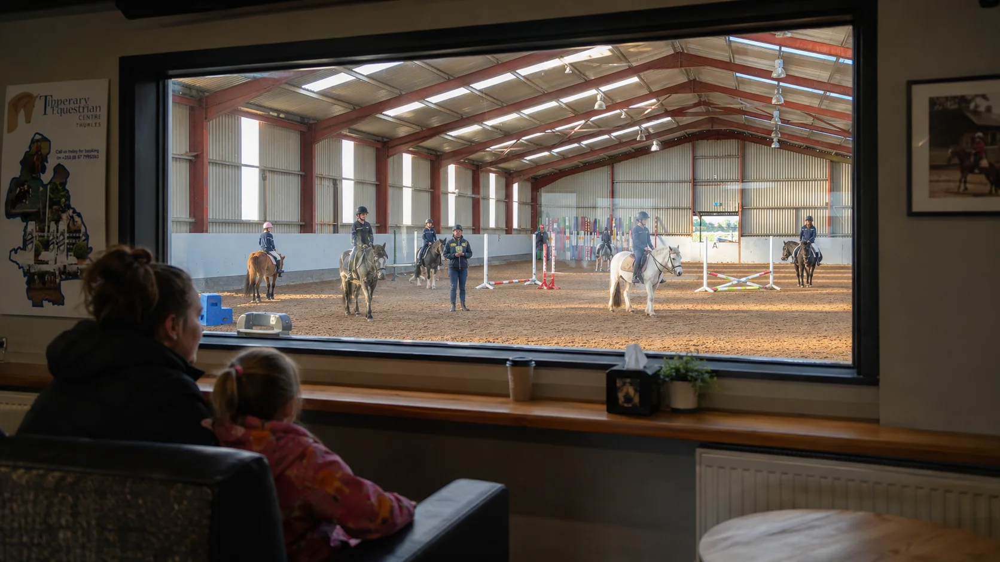

THE CENTRE
Facilities
A year-round equestrian base with indoor and outdoor riding space, cross-country facilities and practical support areas.

All-weather riding space for lessons, schooling, polework, jumping and winter training.
Additional schooling and lesson space in suitable conditions.
Varied riding beyond the arena and opportunities to develop confidence in a different environment.
Trekking and trail riding are included in the centre's public facility listings.
A practical support space for centre activity.
A useful space for theory, club meetings, education or event support.
The existing centre imagery shows a viewing area looking into the indoor arena.
Facilities in one place
The centre's current public information identifies an indoor school, trekking and trail riding, an outdoor arena, a facility centre, a lecture hall and a cross-country course. This page makes those facilities easy to scan instead of burying them in a long homepage.